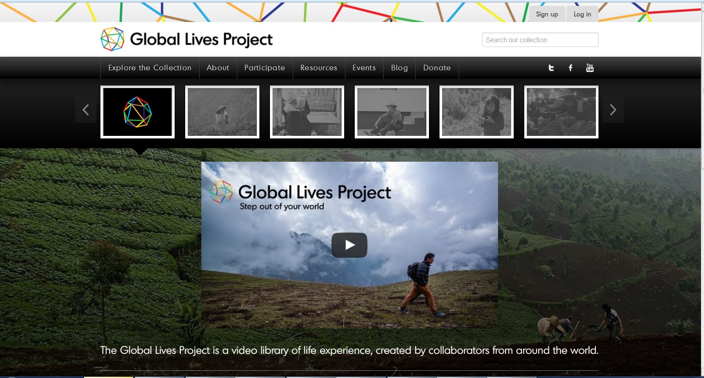

2015-09-01
這個世上居住著各式各樣的人以及背景各異的社群，他們之間的地理間隔可能相距很遠，然而文化、習俗和價值觀的隔閡往往差異更大，正因為如此，遠在非洲的庶民生活對我們而言可能極為陌生，而你認之為理所當然的觀念，在地球另一端的人眼中或許被譏為可笑。這樣的情況下，人們要如何搭起溝通的橋樑？或許影像會是一個強而有力的媒介。
在美國，有個非營利組織叫做 Global Lives Project，它的成員分布全世界，其中包括電影、設計、程式、建築等不同領域的專業者，雖然背景各異，但是目標相同：他們想要建立一個「人類生活經驗的影像圖書館」！這是一個數位典藏的概念，典藏的內容是人類的生活，影像是載體，而這個「生活經驗的影像」就是所謂的紀錄片。正是因為紀錄片面對事實、觀察真實的特性，讓人們得以藉由影片的拍攝和傳播，重新認識不同族群、國家和文化處境下的人類生活，進而從中培養出同理心以及跨文化的理解與互重。
Global Lives Project 先從世界各地選出十個人，挑選的方式是以全球的人口分布、平均收入、性別、宗教與年齡比例等等數據為基準，讓這十人能夠大致符合人類的多樣性面貌。最後出線的人有六位來自亞洲，其餘四位分別為北美洲、南美洲、非洲及歐洲的代表，其中都市和農村居民各半，男性和女性也各半。這些人成為各地志工的拍攝目標，以跟拍的方式記錄他們的一日生活，二十四個小時不間斷、不剪接，沒有旁白、不做詮釋，完成後的影像就放在網路上，供人自由瀏覽、翻譯、下載，也接受展演或教育性質的使用。
由上述內容可以發現，此計畫最重要的價值就在於「開放」，事實上他們也將所有作品以創用CC的方式授權分享。根據創辦人David Evan Harris的說法，分享本來就是計畫的重要部份，他們拍這些影片可不是為了個人成就，而是要促進人們之間的對話，使用創用CC就是要確保影片可以被達到最有效的利用。
除了一開始的十部影片，Global Lives Project 已經在 Kickstarter 群眾募資平台募資成功，開啟了第二波的拍攝計畫，這次主題將聚焦於交通運輸工作者的生活。同時，他們也持續鼓勵各地的影像工作者自行發起拍攝行動，一起充實這個影像圖書館的內容，讓更多獨特的故事被看見、在地的生活被彰顯，慢慢建構出一個開放的跨文化交流平台。